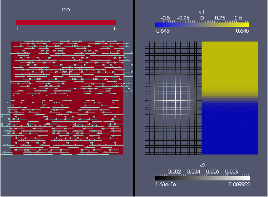
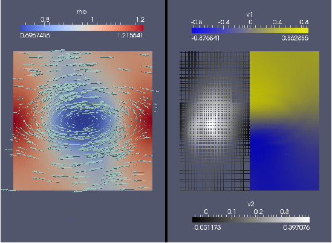
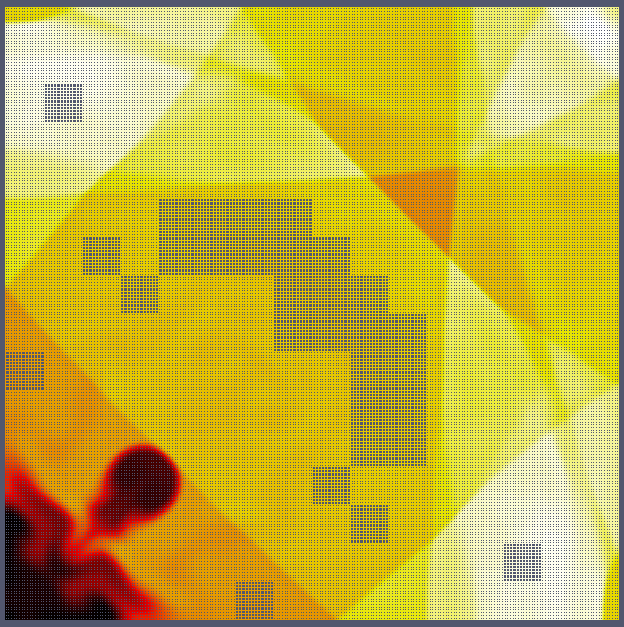
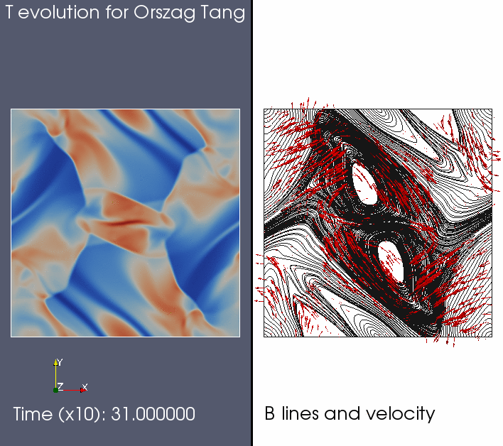

This document describes a few relatively simple example simulations which can be done based on some readily available tests in amrvac/tests/
Advection tests
Configure MPI-AMRVAC to the standard 2D advection equation test as follows: cd amrvac/tests/rho/vac setup.pl -d=2 make mpirun -np 2 amrvac
This test contains several tests, distinguished by iprob. In the above setting, it will use iprob=3 as specified in the meshlist and do a 2D advection of the VAC-logo on a double periodic domain, on the unit square. After converting the 21 data files created to the VTK format suited for paraview visualization, you will be able to make the following movie in a few simple steps:
Its default settings is to perform one advection over the full diagonal, use 3 AMR levels, and have a base level 1 resolution of 50 by 50 (split in 10 by 10 grid blocks).
A 3D variant is to do the advection of a sphere along the diagonal of a cube. This is selected by (iprob=6 in the amrvac.par file)
cd amrvac/tests/rho/auto_3d setup.pl -d=3 make mpirun -np 2 amrvac
A second, 2D test runs iprob=1 by doing
cd amrvac/tests/hd/Kelvin_Helmholtz_2D setup.pl -d=2 make mpirun -np 2 amrvac
It sets up a sheared horizontal velocity field (a tanh profile), augmented with a small sinusoidal vertical displacement centered on the velocity shear region. This situation is Kelvin-Helmholtz unstable, and a vortical flow pattern develops. After converting and using paraview, you can create frames as shown below.


HD tests
The examples realizing relatively standard test cases for hydrodynamics include
amrvac/tests/hd/Woodward_Collela_2D amrvac/tests/hd/bow_cylindrical_2D amrvac/tests/hd/Rayleigh_Taylor_2D amrvac/tests/hd/Richtmyer_Meshkov_dust_2D amrvac/tests/hd/Riemann_pole_2D amrvac/tests/hd/implosion
The first one listed is the Woodward and Collela shock reflection problem, on a 2D cartesian grid. It is a nice illustration on how to code up some non-trivial special boundary conditions (spatio-temporally varying). The second is a supersonic flow hitting a cylinder, and demonstrates the use of a cylindrical grid. The third uses an external constant gravitational field to simulate the development of a Rayleigh-Taylor instability when a heavy density gas rests on top of a light one. The fourth test concentrates on the Richtmyer-Meshkov variant of the Rayleigh-Taylor instability, by letting a shock impinge on an inclined density discontinuity. The fifth test does a standard 1D Riemann problem (the Sod problem) on a 2D polar grid, to show how the boundary conditions need to be set for a symmetry axis. The final test could be run in 2D and 3D, and studies the multiple reflection of shocks in a box, where one can vary the schemes at will, to see how the small-scale structure (combinations of Richtmeyer-Meshkov and Kelvin- Helmholtz behaviour) are influenced by resolution, discretization etc. It is also useful to see which schemes maintain the symmetry about the diagonal.
Impressions for some of these tests are shown below:


This Rayleigh Taylor test (july 2011) can be repeated with 7 refinement levels, it then takes 11375 seconds (on a 4 CPU macBook pro, a bit over 3 hours, all IO included).

The above 'liska' test is a nice one to test symmetry-preserving properties for schemes, and to compare effects of resolution (by raising the number of AMR levels). On my MacBook Pro (june 2011), a quadcore CPU with 8GB memory, I can run a 6 level version (base resolution 24 x 24) up to time t=2.5 in less than 12000 seconds (slightly over 3 hours).
MHD tests
The amrvac/tests/mhd codes up a large variety of standard test cases for MHD, going from 1D Riemann problems to tests doable in 2D and 3D.
One of the tests is the Orszag-Tang test, in the compressible regime, for which an animation is shown below.

The Orsaz-Tang test is again nice to test symmetry-preserving properties for schemes, and to compare effects of resolution (by raising the number of AMR levels).
Another representative MHD problem is the GEM challenge, realizing reconnection in resistive MHD. The problem is described e.g. in the book 'Advanced Magnetohydrodynamics. With applications to laboratory and astrophysical plasmas.', J.P. (Hans) Goedbloed, Rony Keppens, & Stefaan Poedts, 2010, Cambridge University Press, 634 pages, ISBN 9780521705240 (Paperback). We show here the case with resistivity parameter set to 0.001.